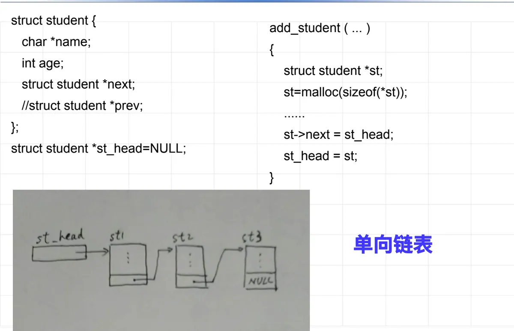
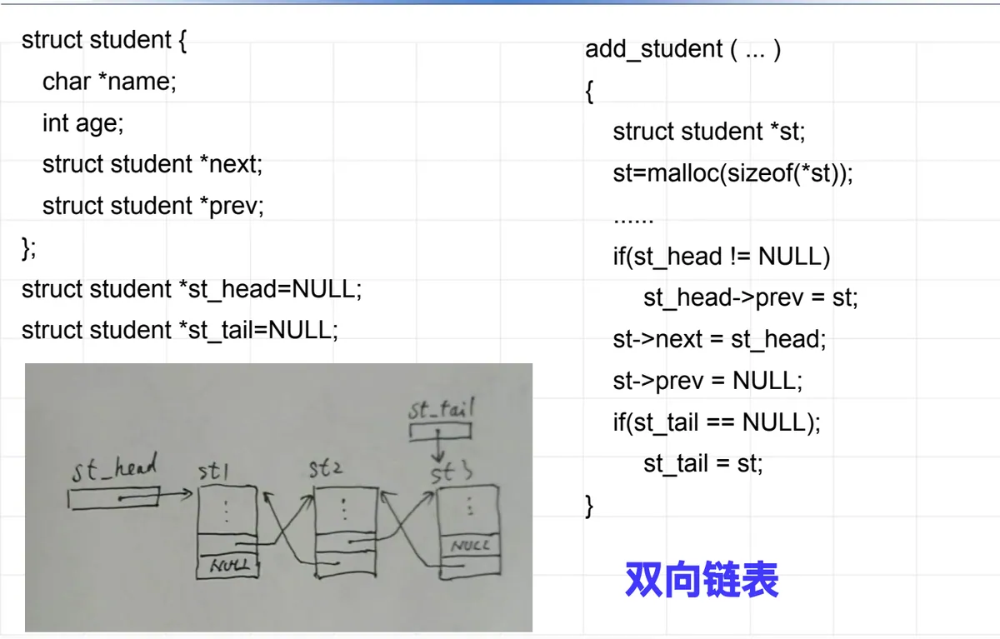
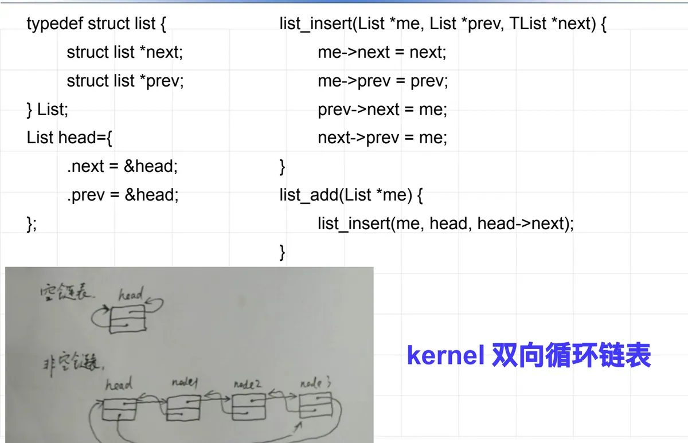
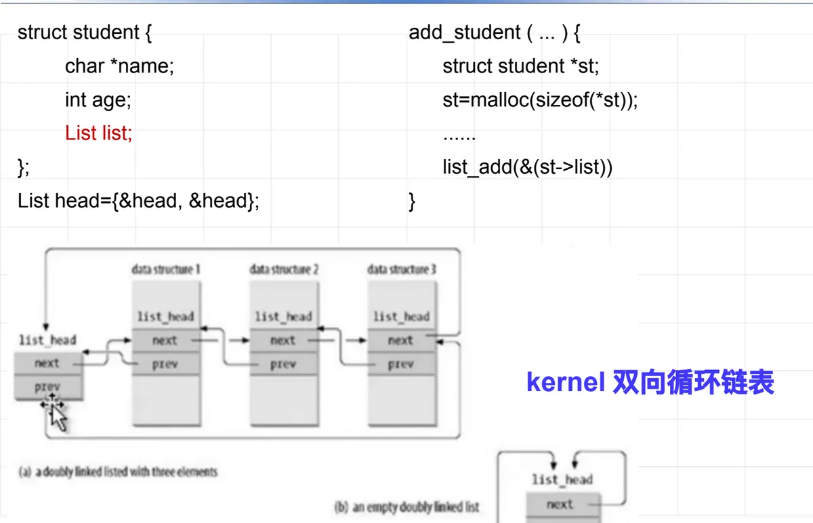
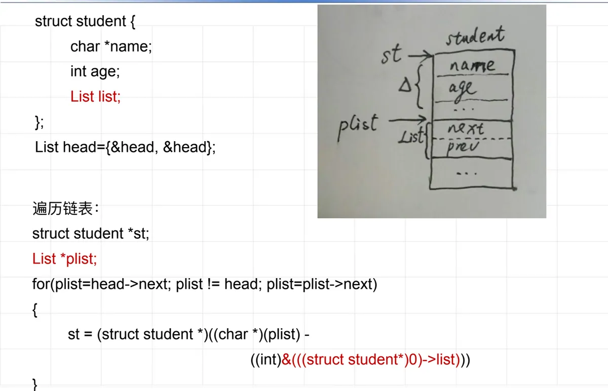
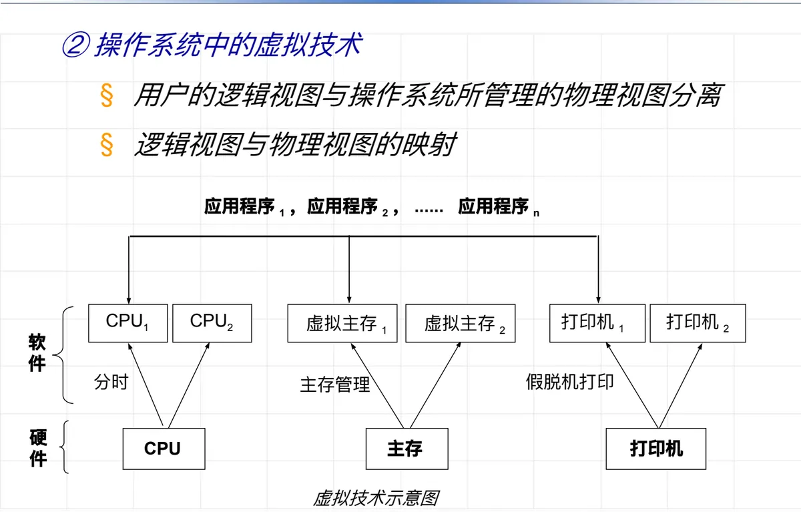

操作系统原理 · 第 1 章 绪论
1.6 操作系统采用的关键技术
前面几节讲的是操作系统的功能与特性，这一节换个角度：看看实现这些功能时用到了哪些关键技术。课件先从 Linux 内核里的一段链表代码入手，展示操作系统实现中的数据结构与编程技巧；再归纳出两大技术支柱——并行处理技术和虚拟技术。前者让 CPU、内存、外设都不闲着，后者让用户看到的「逻辑机器」与真实的「物理机器」分离。
1. 操作系统实现中的数据结构与编程技巧
课件的前言给出了一份清单：Linux 内核中常用的数据结构和编程技巧，包括零长度的数组、链表、红黑树和哈希函数。这四样东西几乎出现在内核的每一个子系统中——进程队列、定时器、内存区管理、文件缓存、设备驱动都靠它们组织数据。其中链表最基础，也最能体现内核编程的风格，本节的例子就从它展开。
注记：零长度数组后来被 C99 标准化为「柔性数组成员」，写法为 char data[];，用途不变——把变长数据紧跟在结构体尾部，一次分配、一次释放。
2. 从单向链表到内核双向循环链表
（1）单向链表：头插法
最朴素的写法是给数据结构自己加一个指针成员，用头插法把新结点挂到链表头上：
struct student {
char *name;
int age;
struct student *next;
};
struct student *st_head = NULL;
/* 头插 */
st->next = st_head;
st_head = st;

（2）双向链表：多一个前驱指针
单向链表只能顺着走，要能往回走就得再加一个前驱指针，同时维护头、尾两个入口。头插时要照顾到三种情况：链表非空时要改原头结点的 prev；新结点成为头结点，prev 置空；若是插入第一个结点，还要把尾指针指向它。
struct student {
char *name;
int age;
struct student *prev;
struct student *next;
};
struct student *st_tail = NULL;
/* 头插 */
st->next = st_head;
if (st_head != NULL)
st_head->prev = st;
st->prev = NULL;
if (st_tail == NULL)
st_tail = st;
st_head = st;

可以看出问题：链表的维护代码与数据本身的定义纠缠在一起，每换一种数据结构就要重写一遍「插入」，而且分支判断越来越多。Linux 内核的做法是把链表节点独立出来。
（3）内核双向循环链表：节点与数据解耦
内核定义一个只有前驱、后继两个指针的链表节点，所有操作都只针对这个节点；链表本身是带头结点的循环链表，空链表时头结点的两个指针都指向自己。插入操作被拆成「在 prev 与 next 之间插入」和「插到头结点之后」两层，逻辑干净得没有一句多余判断：
typedef struct list {
struct list *prev;
struct list *next;
} List;
/* me 插到 prev 与 next 之间 */
static void list_insert(List *me,
List *prev,
List *next)
{
me->next = next;
me->prev = prev;
prev->next = me;
next->prev = me;
}
/* 插到头结点 head 之后 */
static void list_add(List *me)
{
list_insert(me, head, head->next);
}

3. 链表的使用手法：内嵌节点与反推宿主
（1）把链表节点嵌进数据结构
既然链表节点是独立的，用的时候就把它内嵌到自己的数据结构里，而不是用指针指向它。头结点 head 初始化为指向自身的空环，插入时只把内嵌成员的地址交给 list_add：
struct student {
char *name;
int age;
List list;
};
List head = { &head, &head };
add_student(...) {
...
list_add(&(st->list));
}

这样做的好处是：一份链表操作代码可以服务任意类型的数据结构，插入和删除不再需要为每种数据重写。
（2）遍历链表与反推宿主地址
代价是遍历时手里只有 List 节点的地址，需要把它「换算」回包含它的 student 结构的地址。做法是先用一个空指针求出 list 成员在结构内的偏移量，再从节点地址里减掉这个偏移：
List *plist;
int off;
off = (int)&(((struct student *)0)
->list);
for (plist = head->next; plist != head;
plist = plist->next) {
/* 由节点地址减去偏移，得到宿主地址 */
st = (struct student *)
((char *)plist - off);
}

注记：Linux 内核把这个「由成员地址反推宿主地址」的技巧封装成了 container_of 宏，遍历则用 list_for_each_entry，是内核中最常用的两个链表工具。
4. 并行处理技术
讲完编程技巧，回到操作系统本身。操作系统中存在大量的并行活动，也存在各种硬件资源（CPU、内存、外设）；要让进程并行运行、让硬件资源并行工作，从而最大限度提高系统效率，采用的是一整组技术：
- 分时：把处理机时间切片轮转，让多个进程轮流推进；
- 通道与中断：让外设与 CPU 并行工作，并在完成时通知 CPU；
- 资源动态分配：资源按需申请、按需释放，而不是各自占住不放；
- 消息通讯与共享内存：为并行的活动提供交换数据的手段；
- 同步互斥结构（锁、信号量）：让并行的活动在需要时排好队，保证结果正确。
5. 虚拟技术
虚拟技术的本质是一句话：用户的逻辑视图与操作系统所管理的物理视图分离，两者之间靠映射联系起来。用户以为自己独占着 CPU、内存和打印机，实际上这些「东西」都是操作系统从有限的物理资源中虚拟出来的。

按被虚拟的资源分类，虚拟技术有三个应用方向：
- CPU 调度和分配（时间上的虚拟）：用分时技术和时间片，把一台物理 CPU 变成多个「虚拟 CPU」，让每个进程都以为自己独占处理机；
- 内存管理（空间上的虚拟）：用虚拟存储技术建立虚拟地址到物理地址的映射，每个进程都拥有自己的虚拟地址空间；
- 设备管理：用虚拟设备（输入、输出）技术做虚拟分配，最典型的就是把一台打印机虚拟成多台——各进程的打印请求先落盘排队，再依次输出，也就是假脱机打印。
对照图 6 可以看清这三条线：应用程序 → 虚拟资源 → 物理资源。软件分时对应 CPU，主存管理对应主存，假脱机打印对应打印机；中间那一层虚拟资源，正是操作系统「无中生有」造出来的部分。
本节小结
- 操作系统实现中常用的数据结构与编程技巧有零长度的数组、链表、红黑树和哈希函数，它们是内核组织进程、内存、文件等各类数据的基础；
- 链表经历了从「链指针直接放在数据里」的单向链表、双向链表，到「节点与数据解耦」的内核双向循环链表的过程：list_insert 只改四处指针，list_add 复用它插到头结点之后，操作代码与数据类型无关；
- 内核链表的用法是内嵌节点（在结构里放一个 List 成员，head 初始化为空环）加反推宿主（由成员地址减去偏移量得到结构地址，即 container_of 宏的思想）；
- 并行处理技术包括分时、通道、中断、资源动态分配、消息通讯、共享内存以及同步互斥结构（锁、信号量），目的是让进程并行运行、硬件资源并行工作；
- 虚拟技术的本质是逻辑视图与物理视图分离、并建立两者的映射：时间上用分时与时间片虚拟 CPU，空间上用虚拟存储与地址映射虚拟主存，设备上用虚拟设备与虚拟分配（如假脱机打印）虚拟外设。